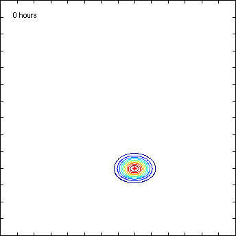

Bistable system

A rare event in a bistable system. Left: time-dependent
probability density for a bistable system consisting of two
competitive species. Right: a single realization of the system is
simulated and plotted on top of the density. Note the scale of the
time for this problem, explaining the term 'rare event'; the
expected time for the system to switch its configuration is
relatively long.
(Plot info: each axis tick is 25 molecules and the contour levels
have been chosen by Matlab)
References
S. Engblom: Spectral Approximation of Solutions to the Chemical
Master Equation, in J. Comput. Appl. Math.
229(1):208--221,
2009: (doi)
S. Engblom: Galerkin Spectral Method applied to the
Chemical Master Equation, in Commun. Comput. Phys.
5(5):871--896,
2009: (abstract), (pdf).
Stefan Engblom
Last modified: Fri Sep 6 14:54:43 CEST 2024